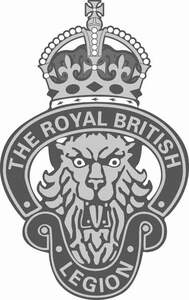

Trade Mark Journal No.2025/039 26 September 2025
UK00004244081 4 August 2025 (14,18,21,25,26,36)

The rights conferred by this registration are personal to the Royal British Legion and may not be enforced or acquired by any licensee or assignee/transferee of the said Royal British Legion. This limitation shall not restrict the Royal British Legion from permitting third parties to use the mark under contract.
- Class 14
- Badges made of precious metal; metal works of art; works of art of precious metals; key rings and key fobs; jewellery; watches; clocks; cufflinks; tie pins; ornamental pins; jewel medallions; lapel badges made of precious metal; brooches; coins; medals; clothing and jewellery ornaments made of precious metal; charms; jewellery boxes; jewellery cases; jewellery rolls; key chains; key chain tags and charms; keyrings made of plastic; trinket boxes of china; statues, statuettes and figurines, made of or coated with precious or semi-precious metals or stones, or imitations thereof.
- Class 18
- Bags, including handbags and tote bags; luggage; wallets and purses; umbrellas and walking sticks.
- Class 21
- Glassware, porcelain and earthenware (not included in other classes); bone china, chinaware, crystalware; giftware articles made of any or all of the aforesaid; mugs; ornaments including wall shields; figurines; coasters (tableware); tea cosies; trinket boxes of china; flasks; hip flasks; water bottles; nutcrackers.
- Class 25
- Clothing; footwear; headgear; ties; belts; scarves; sportswear; wrist bands; aprons.
- Class 26
- Badges for wear, not of precious metal; sew in (embroidered) badges; artificial flowers; embroidery; ribbons; buttons; lanyards for wear; sewing kits.
- Class 36
- Charitable collections and fundraising; arranging charitable fundraising events; financial and insurance consultancy; insurance services; provision of finance and loans; financial support services; provision of grant funding; pension services; financial advisory and planning services; real estate advisory services; provision of permanent housing accommodation and advice relating thereto; debt counselling; advisory services relating to the management of personal finance; tax advice and planning services; organisation of fundraising events.
The Royal British Legion
Representative: J A Kemp LLP